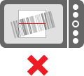
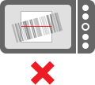
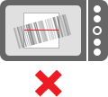

my2cents uses the ZXing Barcode Scanner. In scanning mode it continuously scans a square region shown on your screen — just line up the phone so the barcode is completely inside the viewfinder rectangle:

When a barcode is read, my2cents plays a beep sound or vibrates. It then tries to identify the scanned product, connects to the my2cents server and display comments about the product.
If you're having trouble scanning, make sure to hold the phone steady. If the camera is unable to focus, try moving the phone further or closer from the barcode.